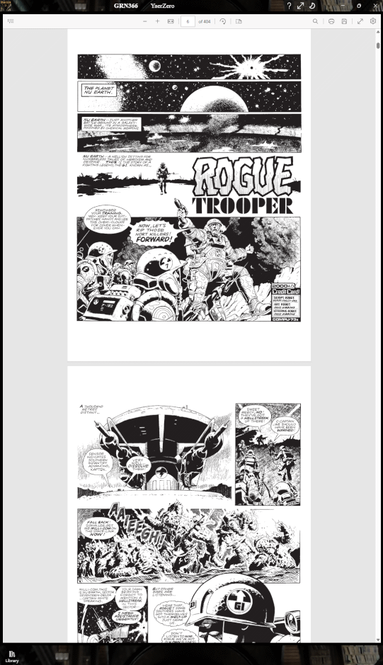

YaerZero Version 2
Yet Another Ebook Reader
Release Notes as ePub
YearZero Privacy Policy

Description
YaerZero is an ebook reader, currently supporting:
- ePub 2
- ePub 3
- CBZ graphic novels and comics
- CBR graphic novels and comics
- PDF Portable documents, books and comics
ePub 2.x and 3.x
These are open standards for electronic books, created and maintained by the International Digital Publishing Forum (IDPF). ePub files are essentially zipped collections of XHTML files, images, CSS stylesheets, and various metadata files. YaerZero supports both ePub2 and ePub3 formats, allowing users to read a wide variety of ebooks with rich formatting and multimedia content.
ePub format books are available from various sources, including:
- Project Gutenberg is dedicated to preserving free public domain books in various formats.
- Standard Ebooks provide beautifully formatted versions of Project Gutenberg ebooks.
- Smashwords is an ebook retailer serving readers around the globe.
- Open Library is an open, editable library catalog, building towards a web page for every book ever published.
- ManyBooks was established in 2004 with the vision of providing an extensive library of books in digital format for free on the Internet.
Plus many, many more.
PDF Portable Document Format
Originating with Adobe in the 1990s, but now under the aegis of the International Standards Organisation - ISO (ISO 32000) -PDF is the de-facto standard for electronic documents. PDF documents are intended to look, as far as practicable, identical on all readers.
PDF format books are available from various sources, including:
- PDF Books World PDF Books World library is a high quality resource for free PDF books, which are digitized version of books attained the public domain status.
- Baen Books has been bringing readers pulse-pounding, thought-provoking adventures straight from the heart of science fiction and fantasy for decades. As well as their commercial books, they maintain a large library of free books.
- Smashwords, Open Library and ManyBooks provide many of their ebooks in PDF format.
YaerZero supports as much of these standards as is required to view most DRM-free books available at the time of writing. It has basic support for embedded video content. It does not support audiobook or synchronised audio-reading capabilities. At all times it should degrade gracefully.
CBZ and CBR (CBx)
CBZ (Comic Book Zip) and CBR (Comic Book Rar) are popular formats for digital comics and graphic novels. These formats are compressed archives (ZIP for CBZ and RAR for CBR) containing a series of image files that represent the pages of the comic. YaerZero allows users to read CBZ and CBR files. Where the archive contains a ComicInfo.xml file, YaerZero will use that to display Author, Artist, Title and any Description present.
As the only difference between these formats is the type of compression used, I will refer to both of these formats as CBx, unless it matters.
CBx format comics can be found on various platforms, including:
- Digital Comic Museum — a free online library of public domain Golden Age comics.
- GetComics — a website offering a wide range of free comic book downloads in CBx formats.
- Comic Book + — a massive site where every day is party day! The original, and still the best site to read and download Golden Age comic books. They also hold a large and growing selection of Silver Age comic books, comic strips, pulp fiction, old time radio (OTR), fanzines, a lively and active forum, plus lots more.
Collections of both free and paid content are available from many other sources as well. Please support your favourite authors and artists by purchasing their work through legitimate channels.
The Humble Bundle site is an excellent source for collected works in various fields and formats at very reasonable prices. They regularly have textbooks and comic collections at significant discounts.
A good source of information on ebook formats is Wikipedia's E-book File Formats article.
The Initial Experience – An Overview
When you first launch YaerZero

You will see an interface resembling the one to the right:
At the top is the familiar menu bar with our application icon and name, some space, and three icons.
The Menu Bar Icons
- Help and documentation.
- Full Screen Experience
Toggle.
- Theme Toggle.
To the right, there is the usual Windows furniture — Minimize, Maximize/Restore, and Close buttons.
The Main Library Window
The untitled top-left section
We have our default cover, bearing the YaerZero name.
The image used for the application icon and for the default book cover is of Trinity College Library in Dublin. This beautiful library is the current home of The Book of Kells. The original photograph was taken by Graeme P. Bell, and the final image was created using Paint.NET. No AI tools were used.
When a book is selected, this image will change to the cover (if any) present in the selected ebook.
The bar beneath the image will show roughly how much reading progress has been made in the selected book. Title, Author, Artist, and Description will be replaced by values from the selected ebook.
Recent Books
Located at the top right, this section displays a list of the six most recently accessed books, including any that have been newly loaded.
Each entry includes:
• A small book cover
thumbnail for visual identification.
• The book title displayed prominently.
• The
author's name
listed below the title.
This section allows users to quickly resume reading their most
recent
selections.
Library Navigation
A dedicated Library section allows users to browse either their complete collection or a filtered view.
- Filter drop-down (default: "All"). This
enables
users to
narrow down the displayed books based on whether the book is an ePub or a
CBx.
- Sort
drop-down (default: "Title") to organize entries by Title
or Author.
- Search enables a search box, which filters the library in real-time based on the entered text, matching against either Title or Author.
The Bottom Bar
At the bottom-left is the grayed-out Current Book button. When a book is being read, this will display the name of the book, and selecting it will open the book in the reading view.
The Refresh button allows users to manually trigger a refresh of the library content. Due to the asynchronous nature of many features in the app, certain actions, for example thumbnail generation, may occur out of order and the library may not reflect the latest changes immediately. Using the Refresh button will update the library and display the most current information.
The / Details View button is a toggle. Initially, YaerZero loads with the library in Covers mode, displaying book covers and reading progress for each volume. Swapping to Details mode displays a smaller version of the cover, Title, Author, and progress.
And finally there is the Add Book button — selecting this will bring up a multiple-select file-picker dialog box.
Adding Books to YaerZero
By File Picker...
Books can be added using the file-picker dialog box to browse the user's system. The user may import a single book, and YaerZero will open the reader view as soon as it has processed enough to do so. Once the book has been fully processed, it will be stored in the library and the full functionality of YaerZero will be available.
If multiple books are imported simultaneously, YaerZero will not return control until all selected books have been imported — unless the user chooses to cancel the process.
By Double-Clicking, Right-Clicking/Long-Hold and Select...
If YaerZero is the default reader (for .epub, .cbz and .cbr files), double-clicking on a book file will import the book into the library and launch the reader view as soon as enough of the book has been processed. This may result in some images not being in place initially, but do not be concerned — YaerZero will continue working in the background and will finish importing.
Once the book has been fully processed, it will be safely stored in the library, with all elements in place.
Drag-and-Drop...
The user may use Drag-and-Drop to import single or multiple files, with the same caveats as using the file-picker.
Single Book vs Multiple Book Import
When importing multiple books, YaerZero will disable most of its user interface while working. If a single book is imported, it will endeavour to return control as quickly as possible, presenting the ebook in readable form while disabling only those parts of the user experience that require a completely processed book.
This is recommended when the user has a single new book they wish to read now! Multiple books may be imported en masse; however, this is only recommended when building a library from a pre-existing folder. It can be very slow.
Speed of Processing
YaerZero imports ebooks by decompressing the original file and processing the contents into a standardised format and layout that can be rapidly presented back to the user.
This can be extremely swift - less than a second, depending on the device - for a plain Gutenberg.org ePub of a short story, or it may be much slower - minutes for an omnibus edition CBx of a long-running graphic novel series. Currently (Version 2.0.12) on a 16 core 9th Generation Intel i9, a CBx book with 1000 4K images takes about a minute to fully process. Decompression is fast, but the thumbnailing of larger images, to a reasonable quality, is very intensive and depends on available hardware cores.
At its fastest, YaerZero will complete processing before the user realises it has even started. At its slowest, over multiple large graphic novels, it may be time for a coffee.
Once a book is processed and present in the library, load times are, generally, extremely rapid. High quality graphic-novels can be a challenge, since they may contain images much larger than the resolution of the physical screen of the device. 24bit images at upwards of 8K resolution take a noticable time to be displayed.
Library Size
YaerZero accesses local storage to store, manage, and present books. A large processed library will eventually cause YaerZero to slow down in daily use. It has been tested it with libraries of over 1500 books of various kinds, and it is still quite usable, but it is recommended that users keep their libraries to a more manageable size. The author suggests smaller libraries of less than 500 processed books to keep performance snappy.
I also note that while ePub formatted books are generally small (often less than 1 Megabyte), CBx graphic novels can run to many Gigabytes! Storing a processed version can be wasteful of space. Once they have been read, the user should remove them from the YaerZero library (please keep backups of your original books).

Now that the library has some books in it, the user may choose to view them in either Covers mode (the default) or Details mode.
Selecting (or tapping) any book, in either mode (or in the Recent Books section), will display that book in the top-left panel, showing the Cover, Title, Author, Artist (if available), and Description (if available).
Double‑tapping on the book in any of these three locations will open the book in the Reader View. Once a book has been opened in the Reader View, the Current Book button in the bottom-left will become active, displaying the book title. Selecting this button will also open the book in the Reader View.
Hold‑tapping or right‑clicking on the book in any of these three locations will bring up a context menu with options to Open the book in the Reader View, or Remove the book from the library.
The Library (in either Covers or Details view) can be scrolled using the mouse wheel, touchpad, or by touch‑dragging on touch‑enabled devices. It also supports multiple selection using standard OS methods (Shift‑Click, Ctrl‑Click, etc.) for batch removal.

The ePUB and CBX Reader View

The Reader view is intended to minimize distractions, allowing readers to focus on the content of their chosen book.
All user interface controls are found at the edges of the app, away from the main content area.
The Title Bar
In addition to the controls already described for the Library view, the Reader View adds two new buttons to the Title Bar for ePub books. They will not be present for CBx books.
- Increase
Font Size.
- Decrease
Font Size.
These allow adjustments to the document font size for reading comfort. YaerZero attempts to honour the book’s intended typography and does not support user-selected typefaces.
The Side Bar Buttons
- Page
Left.
- Page
Right.
These buttons move through the book one page at a time. When going backwards through a chapter break, they go to the end of the previous chapter.
If the reading system has a mouse with a scroll wheel, YaerZero will page through the loaded book as if using these buttons — scroll‑wheel forward for page right / next page, and scroll‑wheel back for page left / previous page.
The Bottom Bar
- Library
View.
Returns to the Library View. The current book remains loaded and retains the current read position until another book is loaded. The views can be switched back and forth freely. Swapping to another book retains the reading position of the old book. - Contents
Page.
Shows a Contents Page. YaerZero uses the ePub3 contents page feature. For ePub2, an equivalent contents page is created from the NCX file. For Comics/Graphic Novels, an ordered page of thumbnails of all images in the archive is shown. Selecting an item jumps to that position in the book, resetting the read position.
- Home.
For all books, returns to the cover, resetting the read position. - Previous.
For ePub books, jumps to the start of the previous chapter, resetting the read position.
For CBx books, this jumps to the previous page (equivalent to Page Left). - Progress indicators
– A double bar for ePub books: the top bar represents chapters, and the lower bar indicates progress within the current chapter.
– A single bar for Comics/Graphic Novels indicating pages read. - Next.
For ePub books, jumps to the start of the next chapter, resetting the read position.
For CBx books, this jumps to the next page (equivalent to Page Right).
- Final
Page.
For ePub books, jumps to the start of the final chapter, resetting the read position.
For CBx books, this jumps to the last page image.
In general, for each book, YaerZero remembers which paragraph (ePub) or page (CBx) was last viewed.
The PDF Reader View

The PDF Reader view is far more restricted than the other views. There is only limited scope for customisation available, with it being based on the WebView2 internal PDF Viewer. Facilties for controlling and interacting with the PDF are limited to those provided by the control. The design of the PDF format does not allow for simple, on-the-fly, modification by intent. It was built as a replacement for immutable paper documents. YearZero is not a full-featured, dedicted PDF reader, but it is adequate for reading most books.
The Bottom Bar
- Library
View.
Returns to the Library View.
Within the PDF View, there are various standard controls used by all common PDF viewers.
The PDF view example image is from "Rogue Trooper - Tales of Nu-Earth" Volume 01, "Rogue Trooper", by Gerry Finley-Day and Dave Gibbons. Collection published by Rebellion, originally published in 2000AD prog 228.
Developer Notes, Credits and Acknowledgements
The release version of YaerZero is the end of a very long road.
YaerZero started as a hobby project, just to keep my hand in as a coder. It was originally written in C++/CLI using Visual Studio 2012 and .NET Framework 4.5, aiming to be compatible with Windows Phone 8.0 as well as Windows 8.0. That proved to be a lot harder than expected, due to incomplete API support for many required features. Sandboxing and security restrictions made a lot of potential approaches far more difficult than they should have been. It became obvious that .NET on Windows Phone was a significant pain point.
The rapid evolution to Windows 8.1 and then to Windows 10 kept moving the goalposts. The decision was made to switch to UWP and C++/CX, which promised better support for the required features and removed the dependency on the .NET Framework. This was a significant rewrite, abandoning Windows Phone along the way, but it paid off in the end, allowing easy access to a large subset of traditional Win32 APIs, modern UWP design, and real C++11/14/17 for fast performance.
The first pass at creating the program attempted to combine reading and display into a single step. That was a poor choice — it quickly became clear that separating the two concerns would make both easier to implement and maintain, as well as making library management and future expansion much simpler.
The UI went from a test harness spilling out raw XHTML to a fully featured UWP XAML interface, with support for touch, mouse, keyboard, and pen input. The reading engine went from a simple WebView loading raw XHTML to a full-featured ebook processor, supporting both ePub2 and ePub3, as well as CBZ and CBR graphic novels and comics.
YaerZero Version 1 was written in C++17 using Microsoft Visual Studio 2026 (Community Edition), with the C++/CX projection and the UWP framework extensions. The reading engine used the EdgeHTML WebView control for page layout, with embedded JavaScript, HTML, and CSS.
ePub processing requires handling ZIP decompression. The unzip decompression algorithm is public domain. Many different C language implementations were examined before deciding to implement a more focused C++ version, better suited to the task than a generalised unzip library.
Once unzip was working and ePub processing was functional, it seemed obvious to add CBZ support. Indeed, it “just worked” once a presentation format compatible with the existing UI was decided upon.
CBR was a very different deal. Once decompressed, it would slot straight into the CBZ handling pipeline. Decompression was the problem.
CBR uses RAR compression, which is proprietary to RARLAB. The command-line and linkable-library UnRAR C++ source is publicly available on GitHub free to use, as long as it is not used to reverse-engineer the RAR compression algorithm. The current README and license are available at the link above. UnRAR also contains other sources that require (and deserve) acknowledgement — please refer to acknow.txt for further details.
UnRAR has a long history. Over the years, the codebase has accumulated several generations of legacy C++ constructs, many of which represent best practices from earlier times but are no longer relevant today. It is an actively maintained codebase, with stability and backwards compatibility at its core. Old code that has been tested and proven over many years is not lightly discarded, giving us a fascinating peek into the history of C++ development practices.
The earliest parts look very much like C code, with manual memory management and pointer arithmetic throughout. Later parts show increasing use of C++ features such as classes, templates, and exceptions. Modern C++ features — smart pointers, STL containers, etc. — have been introduced incrementally where new code has been written, bugs fixed, or improvements made. It is a patchwork of different styles and practices, reflecting the evolution of C++ over the years.
Examination of the UnRAR source made it very clear that it would require either a significant rewrite of the command-line driven program to fit within the UWP framework of YaerZero, or linking in the compiled library. The decision was made to rewrite and avoid an opaque black box at the core of the application. The UnRAR codebase is large and complex, and the rewrite took many months of work. It was necessary to understand the entire codebase, as well as the intricacies of the RAR compression format, in order to produce a working equivalent.
A small fraction of the original code does survive intact and unchanged, and none of the revised code would exist without being able to refer back to the original source. Frequently, debugging required running a debug build of UnRAR alongside a build of YaerZero, comparing behaviour of the dictionary window in memory at the individual byte level. Many thanks to the original UnRAR authors for making this possible. Not sarcasm.
As of Version 2, YaerZero has been rewritten, moving from the Microsoft C++/UWP compiler which is stuck at C++17 and onto the more recent Standard C++23, to use the C++/WinRT projection and the modern WinUI framework. It now also uses WebView2 rather than the unmaintained and deprecated EdgeHTML control for page layout. This will allow new features to be added much more readily
Future directions
There are still many rough edges from the transition to WinUI and I will be looking to smooth them over, particularly accessibility. Using UWP, Version 1 was built with an eye to accessibility by default. Sadly, WinUI is not as fully featured. Even as of August 2026, there are still many missing and unimplemented APIs in the C++/WinRT projection. I am watching keenly for any improvements in this situation, since we were promised that WinUI is the future. Sadly, adding new ways to integrate AI into my workflow seems to have a higher priority than actual functionality.
I plan to look at improving the page layout code, using more modern standards that were not available in EdgeHTML. I am particularly intrigued by recent improvements in CSS, possibly reducing the need for JavaScript.
I also fully intend to explore the additional benefits of C++23 (and 26 when available). I don't expect to get quite the boost that std::span brought, but you never know.
I welcome feedback and suggestions.
AI Statement
YaerZero Version 1
The first commit to this project was made in 2015 — well before any publicly available AI coding assistants became available.
In May 2024, Copilot was integrated into Visual Studio 2022, and I was initially hostile to using it. I soon discovered that it was a very good way of finding documentation — a process that has become increasingly frustrating over the years. I remember when the Win32 API reference and Stroustrup were all that was required, but those days are long past.
With later revisions, I have found AI to be generally helpful at finding information outside of my core competencies, but it is still overconfident, obsequious, and prone to hallucination. While AI has been used to review code and suggest technical improvements, there is no purely AI‑generated code within YaerZero. Most of it was written before AI was available. Nothing has been copy‑pasted without significant revision and testing.
The most frequent use, outside of finding documentation, has been generating complex regular expressions.
Copilot has been very satisfying to complain to when dealing with the frustrations of very bad design decisions that crop up far too often in UWP.
I believe that AI is a tool, and like any tool, it can be misused. It is not a replacement for human creativity, judgement, or skill. It is a supplement. Copilot wrote this paragraph. ;)
Just say NO! to Vibe‑Coding.
YaerZero Version 2
The development of YaerZero Version 2 made significant use of Copilot as a pair-programmer. Without Copilot, I would have had a much more difficult time completing the project. The fragmented nature of the WinUI framework documentation made AI's ability to collate from multiple sources utterly invaluable. I did ask for actual links to documentation, whenever possible, due to the propensity of AI to hallucinate references. This led Copilot to complain about AI Slop polluting its own searches. The irony.
While certain sections of boilerplate code did originate with Copilot Chat, all of the code was checked by myself, and thoroughly tested. All too often, the generated code required significant revision and testing.
There is no Agentic AI generated code in the project. Various Agents were tested initially as potential mass-migration tools, but failed to generate any working code. It didn't matter which model or version, Agentic AIs would cycle on the YearZero code and fail to produce any useful output. They just burned through tokens and failed.
When used on smaller problems, Agentic AI was less effective than simply asking Copilot and invariably produced unreliable results. The code quality, even by "top" models was abysmal.
I ask one top-of-the-line, fan-favourite to give me a function to parse input data from disk, into a usable form. I gave it the context, I gave it the nature of the input and I gave it the expected outcome and failure modes. I did not feel like writing yet another boring special-case input parser. It's boilerplate and the kind of code that would be so common in the training data, that it should be impossible to mess up.
It produced code so bad, that it could compromise the entire system.
Initially, it looked a bit clunky, but serviceable. It used a
function(int argc, wchar_t* argv[])
interface, which was not ideal, but there's a lot of history to it, and a lot of excellent examples of safe
usage, out in the wild. Internally, the function was looping over the input argc times and
passing pointers to the data into a struct, for what I surmised must be extra processing. Again, I was a bit
disappointed in how pedestrian and C-like this was, but I was curious as to what magic was happening in the
struct.
No magic. It had declared this as a global variable.
struct inputData { wchar_t input[8192]; } pathData;
The data was being memcpy'd into it and the raw pointers used to index into it. It was
parsing
argc variable sized data strings from disk, into a fixed buffer, using raw pointers. In
2026. Using
C++23. I didn't even bother compiling it.
Code so bad that Github Copilot's predictive text went into an existential loop when I tried to describe it.
Not a std::vector<std::wstring>
Not even std::vector.reserve(8192)
No hint of std::filesystem::path
This is an automatic CVE. It goes against every C and C++ style, security and safety guide that has been published in the last 40 years. In this day-and-age, reading unverified data into a fixed-sized buffer is a recipe for disaster. This is a serious security vulnerability that could be easily exploited by malicious actors. This is the code that Hackers dream about.
The use of such vulnerable code is unacceptable and demonstrates a lack of security awareness. I'm not even going to qualify it with "... in a production environment,". It's not a "skill-issue", it's criminal negligence.
Anyone trusting Agentic Code without review is making a grave error.
The Slop is real.
YaerZero Version 2.1
The development of YaerZero Version 2.1 has seen Copilot being relegated back to mostly a better search engine. It has provided a few code snippets, but nothing that was integrated into the codebase without extensive modification. I have used Github Copilot to help debug a few crashes, but mostly it gets those badly wrong. It's not very good at understanding exceptions across async code. Neither am I, but at least I don't assume every asynchronous exception happens in start-up code.
Privacy Policy
YaerZero does not collect, store, or transmit any personal data. All processing is done locally on the user's device.
There are no telemetry or analytics features included in the application. User privacy is respected and protected at all times.
For more information, please contact the developer at mac_logo@hotmail.com.
Licenses and Acknowledgements
UnRAR
// UnRAR source code may be used in any software to handle
// RAR archives without limitations free of charge, but cannot be
// used to develop RAR (WinRAR) compatible archivers or to
// re-create the RAR compression algorithm, which is proprietary.
// Distribution of modified versions must comply with the license.
The original license text is available at:
unrar license.txt
©2024 - 2026 LanaRoseWare. All rights reserved.